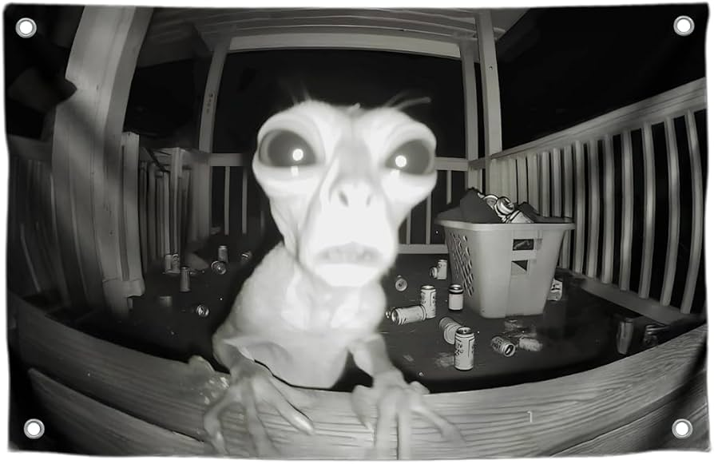

Misantropia: Ataque alien assusta população do Brasil
Por: Simon
ataque alien as 01:34 da madrugada em varias cidades começou em curitiba,SP, RIO De Janero Brasilia ,salvador e campo grande e brasileiros zoam a"boa segurança"..
fofocas atualizadas diariamente
/Após a derrota do Brasil na última partida desta copa de 2026, com tamanho desgosto por termos perdido para Argentina de 4x5, sinto que Pelé morreria de novo após saber dessa notícia. Neymar recebe uma onda de ódio massiva depois de errar o penalti decisivo, com todas as sua esposas pedindo divórcio, pagando pensão, desistindo de sua carreira futibolística. Eu ainda estou sem acreditar nessa atrocidade, não sei como não tomaram essas decisões antes sobre o Neymar. Em sua última copa e entregou uma performance horrível além de ter sofrido uma lesão logo antes do período de jogos começarem. Sua convocação foi um erro total,pois poderíamos ter tido o pai do bebê servindo muito mais entreterimento do que esse joelho de paçoca. Nunca tive tão pouca esperança para a vitória de uma copa e nem a cara de pau de apoiar esse narcisista. Por favor, continuar com o hate nele.

Por: Simon
ataque alien as 01:34 da madrugada em varias cidades começou em curitiba,SP, RIO De Janero Brasilia ,salvador e campo grande e brasileiros zoam a"boa segurança"..